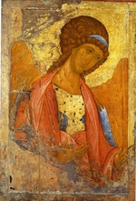

Православие и Мир
Собор Архистратига Михаила и всех небесных сил бесплотных: о дате праздника и иерархии ангеловПраздникиавтор: Епископ Александр (Милеант) Tue, 20 Nov 2007, 09:00 Празднование Собора Архистратига Божия Михаила и прочих Небесных Сил бесплотных установлено в начале IV века на Поместном Лаодикийском Соборе, бывшем за несколько лет до Первого Вселенского Собора. Лаодикийский Собор 35-м правилом осудил и отверг еретическое поклонение ангелам как творцам и правителям мира и утвердил православное их почитание. Совершается праздник в ноябре - девятом месяце от марта (с которого в древности начинался год) - в соответствии с числом 9-ти чинов Ангельских. Восьмой же день месяца (по старому стилю) указывает на будущий Собор всех Сил Небесных в день Страшного Суда Божия, который святые отцы называют "днем восьмым," ибо после века сего, идущего седмицами дней, наступит "день осмый," и тогда "приидет Сын Человеческий в Славе Своей и вси святии Ангелы с Ним" (Мф. 25:31). Чины Ангельские разделяются на три иерархии - высшую, среднюю и низшую. Каждую иерархию составляют три чина. В высшую иерархию входят: Серафимы, Херувимы и Престолы. Ближе всех Пресвятой Троице предстоят шестокрылатые Серафимы (Пламенеющие, Огненные) (Ис. 6:2). Они пламенеют любовью к Богу и других побуждают к ней. После Серафимов Господу предстоят многоочистые Херувимы (Быт. 3:24). Их имя значит: излияние премудрости, просвещение, ибо через них, сияющих светом Богопознания и разумения тайн Божиих, ниспосылается премудрость и просвещение для истинного Богопознания. За Херувимами - предстоят Богоносные по благодати, данной им для служения, Престолы (Кол. 1:16), таинственно и непостижимо носящие Бога. Они служат правосудию Божию. Среднюю Ангельскую иерархию составляют три чина: Господства, Силы и Власти. Господства (Кол. 1:16) владычествуют над последующими чинами Ангелов. Они наставляют поставленных от Бога земных властителей мудрому управлению. Господства учат владеть чувствами, укрощать греховные вожделения, порабощать плоть духу, господствовать над своей волей, побеждать искушения. Силы (1 Пет. 3:22) исполняют волю Божию. Они творят чудеса и ниспосылают благодать чудотворения и прозорливости угодникам Божиим. Силы помогают людям в несении послушаний, укрепляют в терпении, даруют духовную крепость и мужество. Власти (1 Пет. 3:22; Кол. 1:16) имеют власть укрощать силу диавола. Они отражают от людей бесовские искушения, утверждают подвижников, оберегают их, помогают людям в борьбе с злыми помыслами. В низшую иерархию входят три чина: Начала, Архангелы и Ангелы. Начала (Кол. 1:16) начальствуют над низшими ангелами, направляя их к исполнению Божественных повелений. Им поручено управлять вселенной, охранять страны, народы, племена. Начала наставляют людей воздавать каждому честь, подобающую его званию. Учат начальствующих исполнять должностные обязанности не ради личной славы и выгод, а ради чести Божией и пользы ближних. Архангелы (1 Сол. 4:16) благовествуют о великом и преславном, открывают тайны веры, пророчества и разумение воли Божией, укрепляют в людях святую веру, просвещая их ум светом Святого Евангелия. Ангелы (1 Пет. 3:22) наиболее близки к людям. Они возвещают намерения Божий, наставляют людей к добродетельной и святой жизни. Они хранят верующих, удерживают от падений, восставляют падших, никогда не оставляют нас и всегда готовы помочь, если мы пожелаем. Все чины Небесных Сил носят общее название Ангелов - по сути своего служения. Господь открывает Свою волю высшим Ангелам, а они, в свою очередь, просвещают остальных. Архангел Михаил (кто как Бог), вождь небесного воинства. Говорят, сатана ставит себе в большую заслугу, что заставил живописцев НЕ ИЗОБРАЖАТЬ себя поверженным под ногами Покровителя рода человеческого. Празднование 8 ноября с.с, 21 ноября н.с. Упоминается в канонических книгах: Дан. 10:13; 12:1. Иуд. ст. 9. Откр. 12:7-8. В книге "Руководство к написанию икон святых угодников" говорится о том, что святой Архангел Михаил "изображается попирающим (топчущим ногами) люцифера и, как победитель, держащим в левой руке на груди зеленую финиковую ветвь, а в правой руке копье, на верху коего белая хоругвь, с изображением красного креста, в ознаменование победы Креста над диаволом." (Академик В. Д. Фартусов, Москва, Синод. Тип., 1910, стр.226). Русский Златоуст, Архиепископ Херсонский Иннокентий в назидание писал: "Он первый восстал против люцифера (сатаны), когда сей восстал против вседержителя. Известно, чем закончилась эта война, низвержением денницы (сатаны) с неба. С тех пор Архангел Михаил не перестает ратоборствовать за славу Творца и Господа всяческих, за дело спасения рода человеческого, за церковь и чад ее. ... Посему для тех, кои украшаются именем первого из Архангелов, всего приличнее отличаться ревностью к славе Божией, верностью Царю Небесному и царям земным, всегдашнею войной против порока и нечестия, постоянным смирением и самоотвержением" (Седмь Архангелов Божиих, М., 1996, стр. 5-6). Архангел Гавриил (с еврейского - муж Божий) . Один из высших ангелов, в Ветхом и Новом Заветах является, как носитель радостных благовестий. Священнику Захарии он возвещает в храме, при возношении курения, о рождении Иоанна Крестителя, Приснодеве в Назарете - о рождении Спасителя мира. По Библии он считается ангелом хранителем избранного народа. Каббалисты считают его учителем патриарха Иосифа; по учению магометан - от него Магомет получил свои откровения и им же унесён на Небо. На иконах изображается со свечей и зеркалом из ясписа в знамение того, что пути Божии до времени не бывают ясны, но постигаются через время путём изучения слова Божия и послушания голосу совести. Церковь прославляет его 26 марта и 13 июля (старый стиль). Упоминается в канонических книгах: Дан. 8:16 и 9: 21; Лк. 1:9 и 26. Святой Архангел Гавриил, как поясняется в "Руководстве к написанию икон", "изображается держащим в правой руке фонарь с зажженною внутри свечею, а в левой каменное зерцало". (Фартусов, стр. 226). Это зеркало из зеленого ясписа (яшмы) с черными и белыми пятнами на нем, освещаемое светом истины, отражает хорошие и дурные дела народов, возвещает людям тайны Божия домостроительства, спасения человечества. Имя Гавриил, полученное Архангелом от Бога, означает по-русски Крепость Божия или Сила Божия . Архангел Варахиил (благословение Божие) . Это имя известно только по преданиям. В Библии и в Евангелии оно не встречается. Переводится на русский язык имя сего Небесного посланника Варахиил - Благословение Божие . В книге "Руководство к писанию икон" говорится о нем следующее: "Святый Архангел Варахиил, раздаятель благословений Божиих и ходатай, испрашивающий нам Божия благодеяния: изображается несущим на груди своей на одежде белые розы, как бы награждающим по повелению Божию за молитвы, труды и нравственное поведение людей и предвозвещающим блаженство и нескончаемый мир в Царствии Небесном." (Фартусов, стр. 227). Эти белые розы означают благословение Божие. Что может быть чище и благовоннее белых роз, из которых добывается розовое масло? Так Господь через своего Архангела Варахиила посылает свое благословение из недр одежды его за молитвы и труды людям. "Поелику благословения Божии различны, - пишет Святитель Иннокентий Херсонский, - то и служение сего Ангела многообразно: чрез него посылается благословение Божие на всякое дело, на всякое доброе житейское занятие." (Цит. соч., стр. 14). Архангел Салафиил (молитва к Богу) . Упоминается в неканонической книге: 3 Ездр. 5:16. "И вот господь даровал нам целый лик ангелов молитвенных, с их вождем Салафиилом, - пишет Херсонский владыка Иннокентий, - чтобы они чистым дыханием уст своих согревами наши хладные сердца к молитве, чтобы вразумляли нас, когда и как молится, чтобы возносили самые приношения наши к престолу благодати. Когда увидите, братие, на иконе Архангела, стоящего в молитвенном положении, с очами, потупленными долу, с руками, приложенными с благоговением к персям (к груди), то знайте, что это Салафиил." (Цит.соч.,стр.11-12). В книге "Руководство к писанию икон" говорится: "Святый Архангел Салафиил, молитвенник, всегда молящийся Богу о людях и возбуждающий людей к молитве. Он изображается с лицом и очами, склоненными (опущенными) вниз, и руками, прижатыми (сложенными) крестом на груди, как умиленно молящийся." (Фарусов, стр. 226-227).
Архангел Иегудиил (хвала Божия) . Это имя известно только по преданиям. В Библии и в Евангелии оно не встречается. Имя святого Архангела Иегудиила в переводе на русский язык Славитель Божий или Хвала Божия, ведь он действительно, как гласит надписание на фреске Благовещенского Собора, "имать служение утверждати человеки труждающиеся в чесом либо, славы ради Божия, исходатайствовати им воздаяние". Как поясняется в "Руководстве к писанию икон", Архангел Божий Иегудиил "изображается держащим в правой руке золотой венец, как награду от Бога за полезные и благочестивые труды святым людям, а в левой руке бич из трех черных веревок с тремя концами, как наказание грешным за леность к благочестивым трудам." (Фартусов, стр. 227). "Всякий из нас, от мала до велика, обязан жить и трудится для славы Божией, - пишет Архиепископ Херсонский Иннокентий. Чем больше подвиг, тем выше и светлее награда. В деснице Архангела не просто венец: это награда для всякого христианина, трудящегося во славу Божию." (Цит. соч., стр. 13). Архангел Рафаил (помощь Божия) . Упоминается в неканонической книге: Тов. 3:16; 12:12-15. Кто желает сподобиться небесной помощи Рафаила, тому первее всего надобно самому быть милостиву к бедствующим - наставляет Архиепископ Иннокентий Херсонский (Цит. соч., стр.9). Рафаиил по-арамейски означает Исцеление Божие или Врачевание Божие . В "Руководстве к написанию икон" вкратце поясняется, что: "Святый Архангел Рафаиил, врач недугов человеческих: изображается держащим в левой руке сосуд (алавастр) с врачебными средствами (лекарством), а в правой стручец , то есть остриженное птичье перо для помазывания ран." (Фартусов, стр.226). Архангел Уриил (огнь Божий) . Упоминается в неканонической книге: 3 Ездр. 4:1; 5:20. Согласно Преданию православной Христианской Церкви, святой Архангел Уриил был поставлен Богом охранять Рай после грехопадения и изгнания Адама. По учению Святых Отцов, Архангел Уриил, будучи сиянием огня божественного, является просветителем потемненных, неверующих и невежд. А само имя Архангела, соответствуя его особому служению, означает Огонь Божий или Свет Божий . По иконописному канону Православной церкви, святой Архангел по имени Огонь Божий "изображается держащим в правой руке против груди обнаженный меч, а в левой огненный пламень." (Фартусов, стр. 226). "Как Ангел света, он просвещает умы людей откровением истин, для них полезных; как Ангел огня Божественного, он воспламеняет сердца любовью к Богу и истребляет в них нечистые привязанности земные," поясняет владыка Иннокентий, Архимандрит Херсонский. (Цит. соч., стр.10). Архангел Иеремиил (высота Божия) . Упоминается в неканонической книге: 3 Ездр. 4:36. "В 3-ей книге Ездры (4:36) упоминается еще Архангел Иеремиил (высота Божия)", - пишет архимандрит Никифор в "Библейской энциклопедии " (М., 1891, стр. 63). Он присутствовал при первой беседе Архангела Уриила со священником Ездрой и отвечал последнему на вопрос о знамениях, предшествующих концу грешного мира, и о начале вечного царства праведников. Имя святого Архангела Иеремиила означает по-русски Высота Божия или Возвышение Божие. Он посылается свыше от Бога к человеку, дабы содействовать возвышению, возвращению человека к Богу. Архангел Божий не только приоткрывает мрачную перспективу греховного мира, дескать, чем дальше, тем хуже, но также помогает узреть в умирающем мире святые зерна жизни вечной. (см. Ин. 12:24). Изображается он, держащим в правой руке весы. © Copyright 2004 Православие и Мир |
{kind=link}